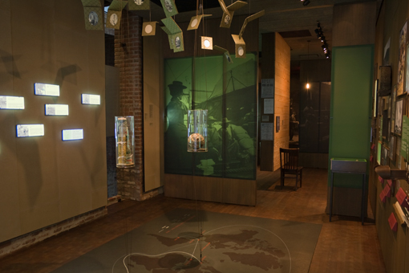
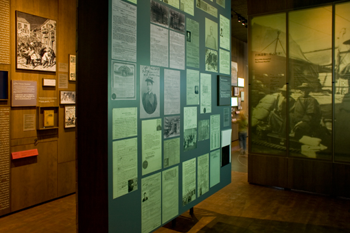
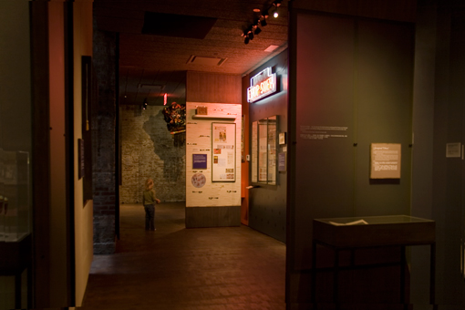
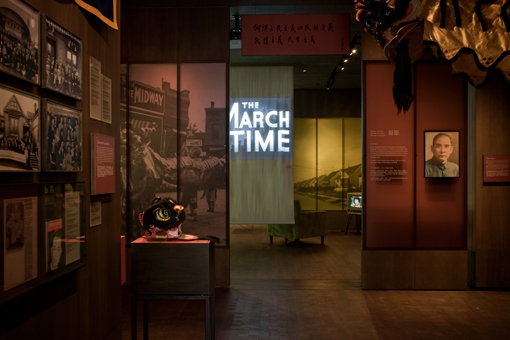
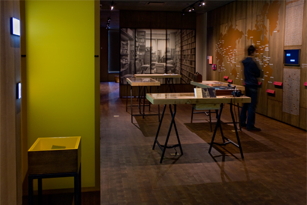
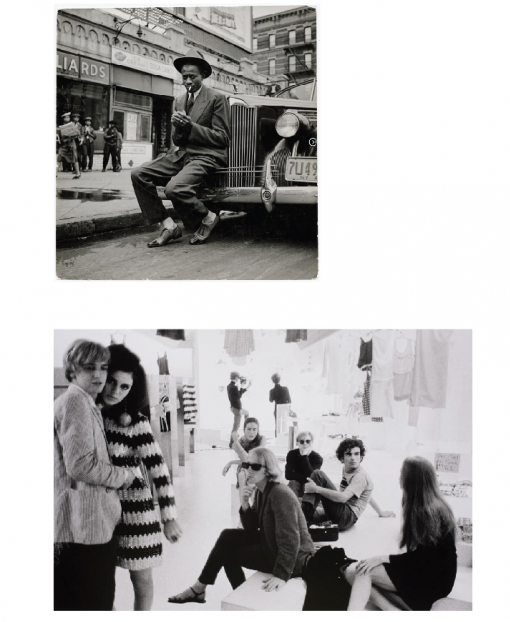

Time is still, Papercuts
During the exhibition Magda Malina�s �Papercuts, How to Love the Moment� accessory collection was slowly destroyed and interchanged by a fold and bound representation showing the process of her work. This also included a template included to built an own accessory piece.
2009 / Dortmund / photography / timeline / Exhibition
Stay inside...
Stay Inside. Close windows and doors. uses the zombie as an ideal character for a role play about life in the modern city. The �Reader� combines this experience with a
collection of theoretical writings, quotes and memories
of such as film critic Jordi Costa, philosopher *Jaime
Cuenca Amigo and the director of the London Showroom Emily Pethick*.
Dimensions: 16.5x23cm
Page count: 96
Design made at Roger Teeuwen Ontwerper's
Maatwerk
The package mainly consists of one newspaperprint cut into two different formats. These crops form a starting point and offer a dialogue of different relations between the content.
�Loosely fitting could be a description of this newspaper.�Whether it sounds positive or not, it is a fact. As factual as our surroundings are setup. ... All seemed to be subtle and opinion-less... .�That is the strength of the work of Vanhoe. He�infiltrates the hierarchy of our thinking without being illustrative, carefully carelessness.�
�Reinaart Vanhoe
This publication is a follow up form the exhibition �Maatwerk� which took place in �PAKT�, Amsterdam 2008.�The publication is a�collaboration by Reinaart Vanhoe and Nele Vos. With contributions of Hans Bossmann and komt/nu/voorbij.
2 x 16 pages, text NL/EN, published by Auto i.c.w. Graphic Union Press, price: 2 Euro excl. porto
For online orders within Europe and more detailed information please contact: order@vosbrenner.net
or http://graphicunion.org/mise.php?item=nature-vs-culture
Our Choice
Our Choice, A Plan to Solve the Climate Crisis gathers in one place the most effective solutions that are available now and that, together, will solve this crisis. It is meant to depoliticize the climate crisis as much as possible and inspire readers to take action�not only on an individual basis, but as participants in the political processes.
Dimensions: 19x22.5cm
Page count: 416pages
Designed at MGMT. Design in collaboration with Melcher Media
2009 / New York City / international / Al Gore / Book / sustainability
Our Choice-Graphics
Design of the follow up publication to Al Gore's Inconvenient Truth, this volume offers the most effective solutions that are available to solve the climate crisis.
Designed at MGMT. Design in collaboration with Melcher Media
www.algore.com
2009 / New York City / Al Gore / Information Design / sustainability / timeline
Europe by Designers
The poster presented here is a commentary on Europe the continent and not limited to the territories marked by the European Union. It is the compilation of these states and territories rich histories that makes it the birthplace of modern western culture as illustrated with in the content of the text. The text originates from wikipedia.
http://www.europebydesigners.com
2009 / Information Design / participation / poster / self-initiated / Europe







MOCA
MOCA (Museum of Chinese in America): With A Single Step presents the journey of the first Chinese immigrants to the USA through present Chinese American heroes. Once the site of a machine shop, Maya Lin designed the new museum facility that expanded their space ten-fold. We designed the exhibition graphics of the permanent exhibition and collaborated with Matter Architecture Practice who did the exhibition design.
Designed at MGMT. design in collaboration with Matter Practice and Marcus Doshi Lighting Design
2009 / Matter Practice / New York City / interiour / international / Exhibition
Quay Brothers
Dormitorium: Film Decors by the Quay Brothers is an one room exhibition with extremely low light levels. The exhibition signage was designed to work within these conditions, the title sign and object indicators were laser cut black
MDF with a white MDF backing. This helped to illuminate the signage with little light. The introduction text was related to their films produced on a 35mm slide and projected.
Exhibition design: Matter Practice
2009 / Matter Practice / New York City / interiour / Exhibition
Greg Yang Design
Greg Yang Design is a multifunctional architecture office. Greg�s office produces work that is simple, elegant, clean and sophisticated. The identity consists of three incomplete isometric cubes, when the forms are collapsed onto each other they form a complete cube.
Designed at MGMT. Design
Kosmopolis Rotterdam
Kosmopolis is an unconventional national and international multimedia platform that uses art and culture as a deep commitment to create a dialogue between ethnic groups, young and old, believers and unbelievers.
It happens a lot in the Netherlands, but it often lacks visibility. Therefore Kosmopolis opens networks, and increases with clear web access to cultural diversity in the arts.
This cart is part of a bigger series. Each collage combines an architectural surrounding with a social group. They form the center and present a new insight on their individual urban surroundings.
Design made at Roger Teeuwen Ontwerper's
2009 / Rotterdam / Printed Matter / Europe
Markt van Morgen I
De Markt van Morgen is a bustling city market with new products, new services, fashion shows, performances, special sales vehicles, market stalls and much more.
The Rotterdam Afrikaandermarket is one of the largest markets in the Netherlands. At Afrikaanderplein you can find two times a week about 300 booths with the most 'exotic' offers in the city.
To make this market not only a place where unique products are for sale but where also innovative cultural wealth can be experienced Freehouse created a plan for the future of this market. During the weekend of 6 and June 7 this plan was presented as a living model.
The background pattern of icons interacts with the different sections in the guide and also represents the different activities during the market located on the map.
The map which is on the interior of the envelope can be found here
Design made at Roger Teeuwen Ontwerper's
2009 / environmental / Rotterdam / Printed Matter
Markt van Morgen II
Map for De Markt van Morgen as part of the guides envelope. In the guide the icons are connected to their specific activities. They form a pattern running throughout the publication and are activated within their specific chapter.
The complete guide can found
here
Design made at Roger Teeuwen Ontwerper's
2009 / environmental / Information Design / Rotterdam
Freehouse
Wonderland 2009 is the latest collection of fashion designer Marga Weimans, it is based on and arose in the Afrikaanderwijk. The in early 2009 presented haute couture collection in Paris presents elements of the neighborhood like typical architectural structures.
Also fragments derived from distinctive interiors, traditional decorations from the Afrikaandermarket and other available fabrics and jewelry are included in her collection.
Design made at Roger Teeuwen Ontwerper's
2009 / architecture / Rotterdam / Printed Matter
NPSF - Expo
New Practices San Francisco 2009 is the West Coasts premiere of the American Institute of Architecture New York�s annual portfolio competition and exhibition. The budget for this exhibition was minimal, we sourced materials with local building supply stores and asked them to donate the materials. The display system we created was made of metal peg board with a series of custom made clips and rope.
Exhibition design: Matter Practice
2009 / architecture / Matter Practice / environmental / New York City / interiour / Exhibition
NPSF - Print
Newspaper print of the selected architecture studios of New Practices San Francisco including their portfolios and interviews that where also selected for the same titled exhibition.
2009 / San Francisco / architecture / Matter Practice / environmental / interiour / newsprint / Printed Matter
Nature vs. Culture
Nature vs. Culture, A series of 12 observations on 24 pages about the appearance of nature in urban surroundings.
Edition of 2000 printed in Rotterdam, April 2009 / unedited, ongoing and strictly not copyrighted - published by Graphic Union Press NY.
For online orders within Europe and more detailed information please contact: order@vosbrenner.net
http://fourcallahans.net/sister/graphicunionpress/nature_vs_culture
2009 / New York City / newsprint / poster / Printed Matter / self-initiated
Reading Matter
Produced in conjunction with a lecture and exhibition of Matter�s work. Reading Matter displayed small models and media loops of their projects throughout a flexible wall system. We developed for this exhibition a label system comprised of metal adhesive strips with embossed typography. Reflective neon signage was designed to accompany the color scheme of the installation.
2009 / architecture / Matter Practice / environmental / New York City / interiour / Exhibition
Munkacsi's Lost Archive
This exhibition held at ICP is a part of Extremely Hungary, a yearlong festival of performances and exhibitions in New York City and Washington, D.C., throughout 2009.
This exhibition was shown in the frame of ICP's Year of Fashion '09.
Designed at MGMT. Design
2009 / New York City / photography / Exhibition
In High Fashion
An exhibition of 175 works by Edward Steichen drawn largely from the Cond� Nast archives. This is the first presentation that gives serious consideration to the full range of Steichen�s fashion images. This exhibition was shown in the frame of ICP's Year of Fashion '09.
Designed at MGMT. Design
2009 / New York City / photography / Exhibition

This is not a Fashion Photograph.
This Is Not a Fashion Photograph, organized by guest
curator Vince Aletti, is an exhibition drawn largely from the permanent collection of ICP that looks at the non-fashion sources of contemporary fashion photography. Because many young fashion photographers are more interested in authenticity than artifice, they are looking closely at work by Weegee, Lisette Model, Andr� Kert�sz, and Danny Lyon.
This exhibition was shown in the frame of ICP's Year of Fashion '09.
Designed at MGMT. Design
2009 / New York City / photography / Exhibition
Anyspacewhatever
This proposed exhibition catalog for the Guggenheim in New York documents the take over and transformation of the museum by 10 artists who have claimed exhibition as their medium. Each artist was assigned an icon to track their movements and collaborative involvement over the course of the exhibition.
Dimensions: 15x23.5cm
Page count: 416
Designed at MGMT. Design
Anyspace
Anyspace is a font based on an 18 pin dot matrix printer. If you are interested in using or purchasing Anyspace please email us at order@vosbrenner.net
2009 / customized-font / purchase-font / Type Design
Anyspacewhatever
In this publication iconography each artist was assigned an icon derived from their work. They were used systematically to track their interaction(s) in the Guggenheim, New York. The icons were also incorporated into the publication. The icon below is a meta icon, a result of the collaborative process of each artist. The larger the icon the more collaborations with other artists within the exhibition. This was an unrealized design.
2009 / environmental / New York City / interiour / Information Design
Parsons Student Guide
This publication series includes three books used by Parsons the New School for Design to reach prospective students at the undergraduate and graduate levels. The covers and interior divider section are compiled of found materials on location from the student ateliers.
Dimensions: 17.8x25.5;cm
Page count: 112
Designed at MGMT. Design
2009 / educational-institution / New York City / Book / student-guide
Back to top